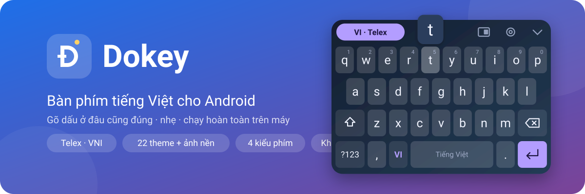
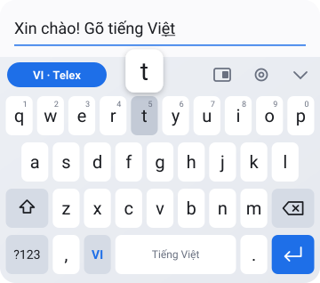
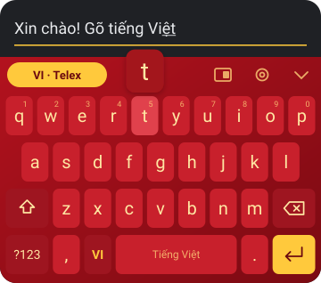
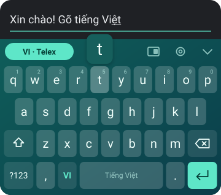
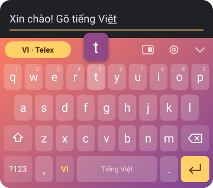
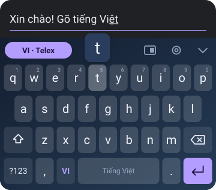
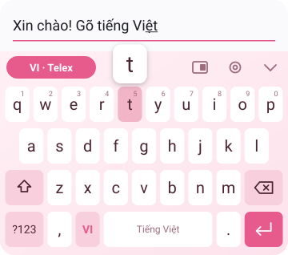
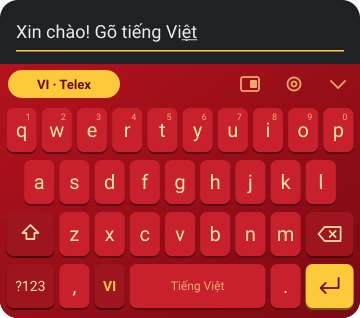
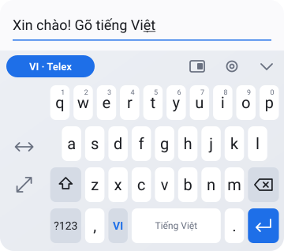

Phiên bản 0.3.0 · 3 tháng 11, 2026
Dokey cho Android
Bàn phím tiếng Việt cho điện thoại Android: gõ Telex và VNI, dấu luôn đặt đúng chính tả dù gõ ở đâu trong từ, tự nhận ra từ tiếng Anh để không thêm dấu bừa. Chạy hoàn toàn trên máy, ứng dụng không xin quyền truy cập Internet.

Trạng thái
Đây là bản thử nghiệm, chưa được thử trên điện thoại thật. Bộ gõ, từ điển gợi ý và gõ vuốt đã có kiểm thử tự động; phần giao diện bàn phím mới biên dịch được, chưa ai cài và gõ thử. Ảnh trên trang là ảnh minh hoạ vẽ từ bảng màu và bố cục phím trong mã nguồn, không phải ảnh chụp màn hình.
Gõ tiếng Việt
- Telex và VNI, bỏ dấu kiểu mới (hoà, thuý) hoặc kiểu cũ (hòa, thúy).
- Gõ dấu ở đâu cũng được:
tieesnghaytieengsđều ra tiếng. - Giữ nguyên từ tiếng Anh như class, google, Windows.
- Gợi ý từ: gõ không dấu vẫn được gợi ý có dấu (
duoc→ được), đoán tiếng tiếp theo. - Gõ vuốt từng tiếng, không cần dấu; gõ tắt
ko→ không,dc→ được, tự sửa được danh sách. - Vẽ dấu: vuốt lên từ phím cách – chéo phải sắc, chéo trái huyền, thẳng lên hỏi, lượn sóng ngã, lên rồi xuống nặng.
- Emoji theo nhóm và bộ nhớ tạm 25 mục gần nhất.
22 theme, 4 kiểu phím, ảnh nền của bạn
Material You theo màu hình nền, theo hệ thống sáng/tối, cùng các nhóm Màu sắc, Việt Nam và Lễ hội. Kiểu phím phẳng, phím nổi, bo tròn hoặc viền mảnh; hoặc lấy một ảnh trong máy làm nền bàn phím.








Cài đặt
- Mở bản phát hành mới nhất và tải file
dokey-android-…-debug.apk. - Cài file APK (Android sẽ hỏi cho phép cài từ nguồn không xác định).
- Mở ứng dụng Dokey → Bật Dokey → Chọn bàn phím, rồi gõ thử ngay trong màn hình cài đặt.
Bản hiện tại là bản debug ký bằng khoá tạm: muốn cài bản mới hơn, hãy gỡ bản cũ trước.
Thông tin
- Yêu cầu
- Android 7.0 trở lên
- Quyền
- Chỉ quyền rung. Không có quyền Internet.
- Từ điển gợi ý
- Đếm từ văn bản không thuộc diện bảo hộ quyền tác giả: văn bản pháp luật Việt Nam, Truyện Kiều, Lục Vân Tiên, Tắt đèn, Nam Phong tạp chí.
- Bản cho máy tính
- Dokey cho macOS và Windows – xem bài viết về Dokey.
- Bản quyền
- © 2026 Do Huy Toan. Mọi quyền được bảo lưu. Nghiêm cấm sao chép, sửa đổi, phân phối hoặc phát hành lại dưới mọi hình thức khi chưa có sự đồng ý bằng văn bản của tác giả.
In English
Dokey for Android is a Vietnamese keyboard (input method) with Telex and VNI typing, tone marks placed by the spelling rules, English words left untouched, word suggestions that add the marks for you, swipe typing, text shortcuts, tone gestures, emoji, clipboard history, 22 themes and Material You. It works fully offline. Early release, not yet tested on a real device.